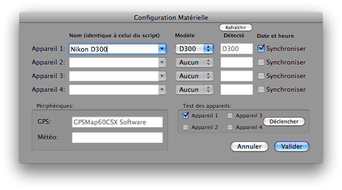

Configuration des appareils photo numériques
Pour configurer les APNs dans Lunar Eclipse Maestro vous devez ouvrir le dialogue Configuration Matérielle.
-
Dans le menu Configuration sélectionnez Configuration matérielle…
-
Renseignez les champs.
Dès qu’un APN est connecté et allumé sur le bus USB ou Firewire, il apparaîtra dans le dialogue une fois qu’il répond. Un sablier d’attente sera affiché en attendant la réponse de l’appareil: c’est-à-dire une fois que l’indicateur lumineux de lecture de la carte mémoire s’est éteint. Si l’APN n’apparaît toujours pas, alors cliquez sur le bouton Rafraîchir. Si ce bouton est désactivé, alors cela signifie qu’une recherche d’appareil est en cours et que vous devez attendre un peu. Le bouton Rafraîchir n’existe pas dans la version Intel.
Note: si la carte mémoire est déjà pleine d’images, alors il faudra du temps, jusqu’à quelques minutes, avant que l’appareil ne s’affiche.

-
Contrôlez maintenant que les APNs fonctionnent normalement.
Après avoir sélectionné un appareil, cliquez sur le bouton Déclencher pour prendre une photo. Cela demande à l’APN de faire une exposition au 1/2000è, à f/8 et 200 ISO. Vérifiez que l’APN a bien accepté les réglages et que le temps d’exposition, l’ouverture et la sensibilité ISO sont bonnes, mais aussi qu’une image a bien été créée.
-
Donnez un nom à l’APN: il doit être identique à celui utilisé dans le script.
-
Si il n’est pas automatiquement réglé, sélectionnez le modèle de votre APN. Si le modèle de votre appareil n’existe pas, alors sélectionnez Autre.
-
Pour synchroniser la date et l’heure d’un APN qui possède cette fonctionnalitée avec celle de votre Mac, cochez Synchroniser.
-
Le numéro de série de votre APN est affiché dans une bulle d’aide jaune quand vous passez la souris au-dessus du contenu de la colonne Détecté. Cela vous permet de différencier plusieurs APNs du même modèle.
|
Ces réglages ne sont pas sauvegardés lorsque l’application est quittée parce-qu’il n’y a aucune possibilité de garantir que les APNs seront connectés dans le même ordre la prochaine fois.
Si un GPS est connecté au Mac, alors il apparaîtra dans le dialogue une fois allumé même si il était éteint lorsque le dialogue a été ouvert.
Avec Lunar Eclipse Maestro Pro, vous pouvez aussi connecter une Station Météo et récupérer les données.